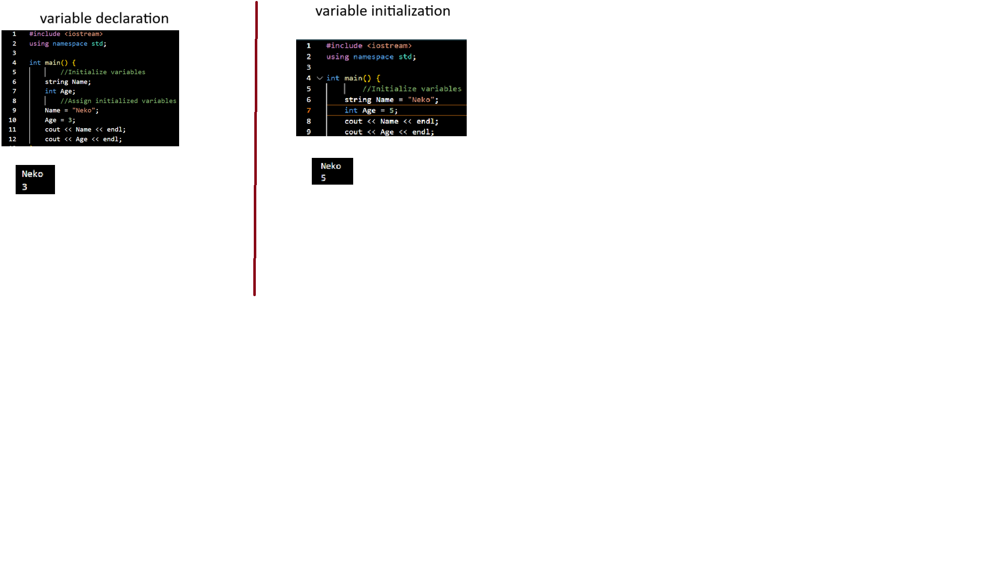
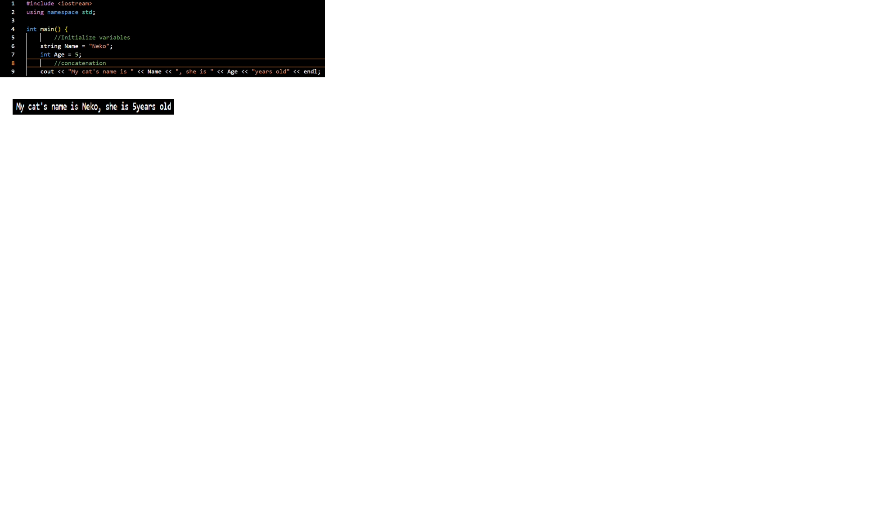
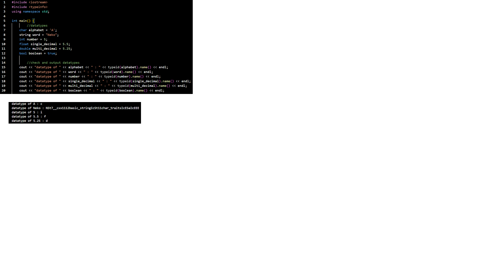
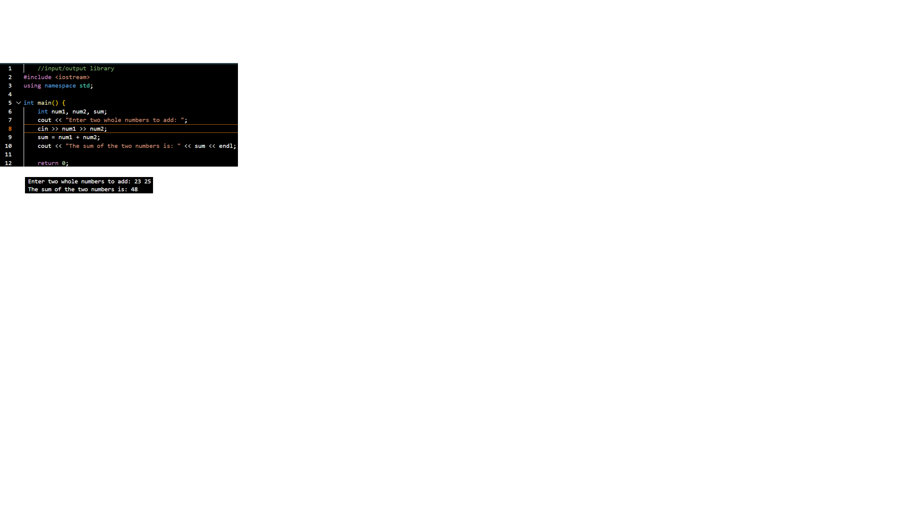
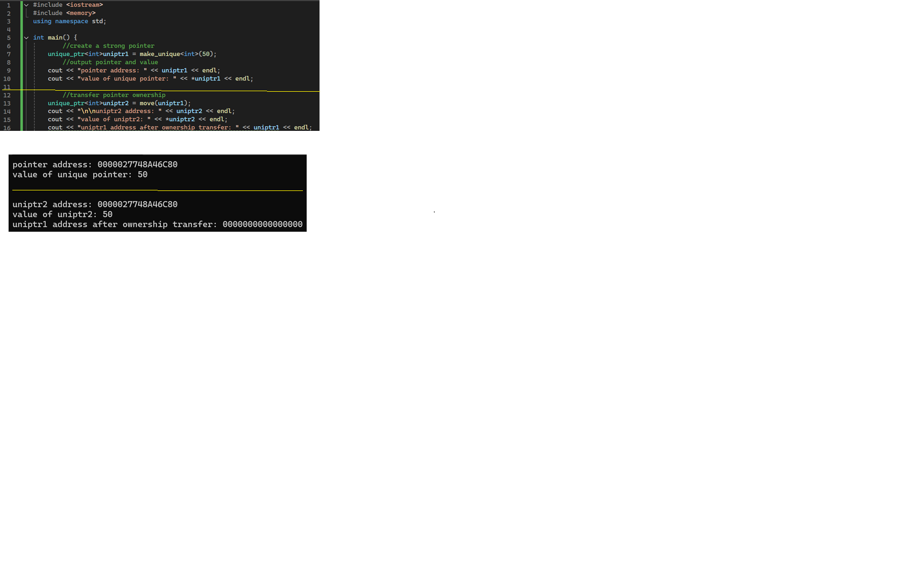
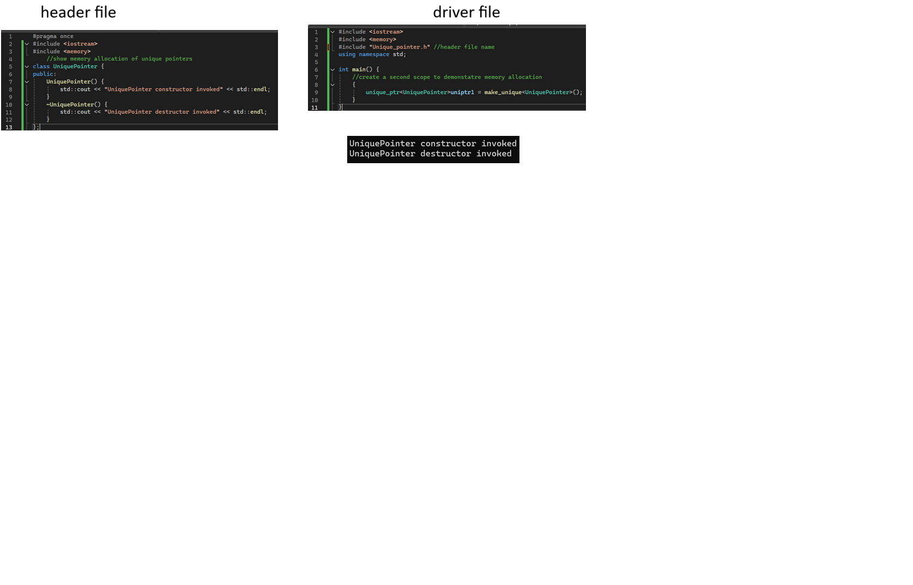
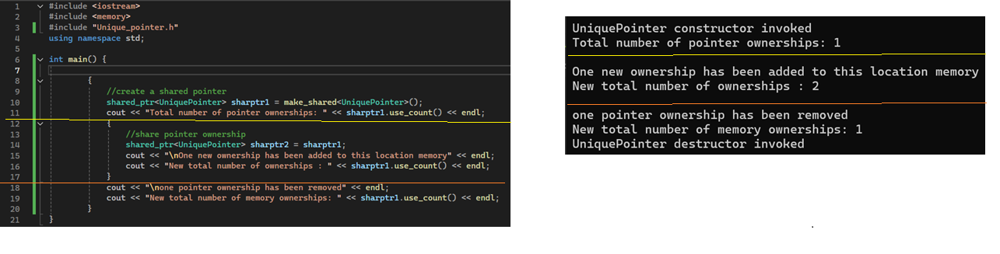

constant variable

variable declaration and initialization

concatenation

Datatypes and identifying datatypes of variables

User input

constant variable
reference variable

create pointer
access pointed location and value

create unique pointer

unique pointer memory allocation

shared pointer
